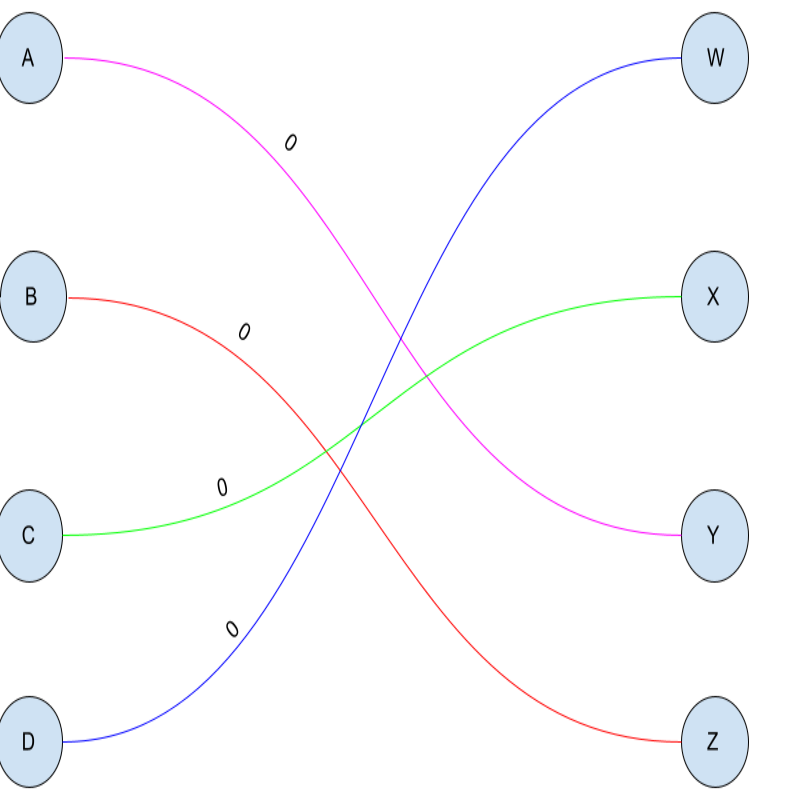

L'application d'appariement est une application permettant de créer des couples d'hôtes et de visiteurs dans le cadre d'échanges scolaires.
Une notion d'historique et inclue ainsi qu'un algorithme de graphe permettant de gérer les étudiants ayant des allergies ou encore en fonction des
goûts que les couples auraient en commun. Il est également possible de forcer des appariements entre 2 étudiants. Finalement, le résultat est stocké dans
un fichier .csv et l'historique est sauvegardé pour l'année prochaine.
-
Java programmation objet
-
Javafx
-
Figma
-
Graphe
-
Git
-
Créer et interpréter des graphes valués
-
Réaliser une interface intuitive
-
Travailler en équipe (Leader)